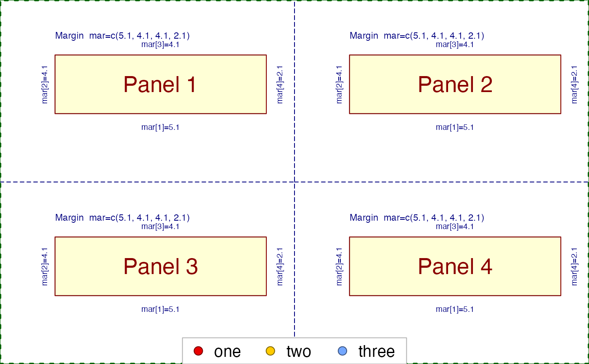

Add legend in the outer margin
outer_legend( x = "bottom", y, doPar = TRUE, legend, bg = "white", box.col = "grey70", col, pt.bg = col, pch = 21, ncol = min(c(5, length(legend))), cex = 1.2, pt.cex = 1.4, ... )
| x, y | position of the legend, using any method
recognized by |
|---|---|
| doPar | logical indicating whether to apply
|
| legend | character vector, or expression, used to display each legend label. |
| bg | color used as the background of the legend box. |
| box.col | color used as the frame border color of the legend box. |
| col | vector of colors used to color each entry in |
| pt.bg | vector of colors used as the background color,
when |
| pch | integer or character vector of point shapes,
as described in |
| ncol | integer number of columns to use for legend
entries. By default |
| cex | character expansion multiplier, used to size the legend text overall. |
| pt.cex | point expansion factor, used to size points
when |
| ... | additional arguments are passed to
|
This function is intended to place a legend outside the figure
in the outer margin area. The motivating use case is to
display a legend below multi-panel base R graphics plots,
for example when using par("mfrow"=c(2,2)).
Other jam utility functions:
element_grob.element_textbox_colorsub(),
element_textbox_colorsub(),
get_se_assaydata(),
handle_highlightPoints(),
points2polygonHull()
opar <- par(no.readonly=TRUE); on.exit(par(opar)); par("mfrow"=c(2,2)); for (i in 1:4) { jamba::nullPlot(plotAreaTitle=paste("Panel", i)); }#>#> #>#> #> #>